1, Ultadanga Junction Road, Kolkata
THE SPIRITUAL BIRTHPLACE OF ISKCON | EST. 1918
There are places that merely exist — and then there are places that act. Bhaktivinode Asan, at 1 Ultadanga Junction Road, Kolkata, belongs firmly to the second category. Within these walls and on the terrace of this century-old building, the entire arc of global Vaishnavism was redirected. What happened here was not merely history — it was prophecy fulfilled.
This is the very building from where Srila Bhakti Siddhanta Saraswati Thakur began his monumental missionary work in 1918 — immediately after accepting the renounced order of Sannyasa. From this single rented house in North Kolkata, his movement grew into the Gaudiya Math: a pan-India network of 64 temples within his own lifetime.
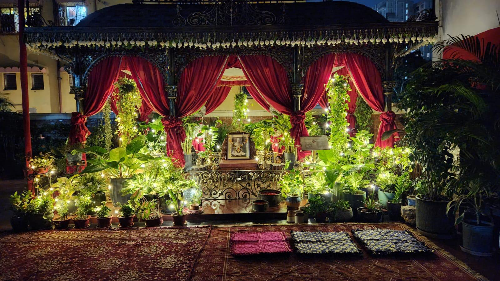
"You are educated young men. Why don't you preach Lord Caitanya Mahaprabhu's message throughout the whole world?"
— Srila Bhakti Siddhanta Saraswati Thakur, spoken on the terrace of this building, 1922
In one historic evening in 1922, on that very terrace, a young Bengali gentleman named Abhay Charan De came to this address. In that single, prophetic exchange, the seed of what would become the International Society for Krishna Consciousness — ISKCON, the world's largest Vaishnava organisation — was planted. Abhay Charan De would later take initiation from Srila Bhakti Siddhanta Saraswati Thakur and, decades later, cross the ocean at the age of 69 to establish ISKCON temples and centres across every continent of the world. He is revered today as His Divine Grace A.C. Bhaktivedanta Swami Prabhupada — Founder-Acharya of ISKCON.
In every meaningful sense, this building is the spiritual birthplace of ISKCON.
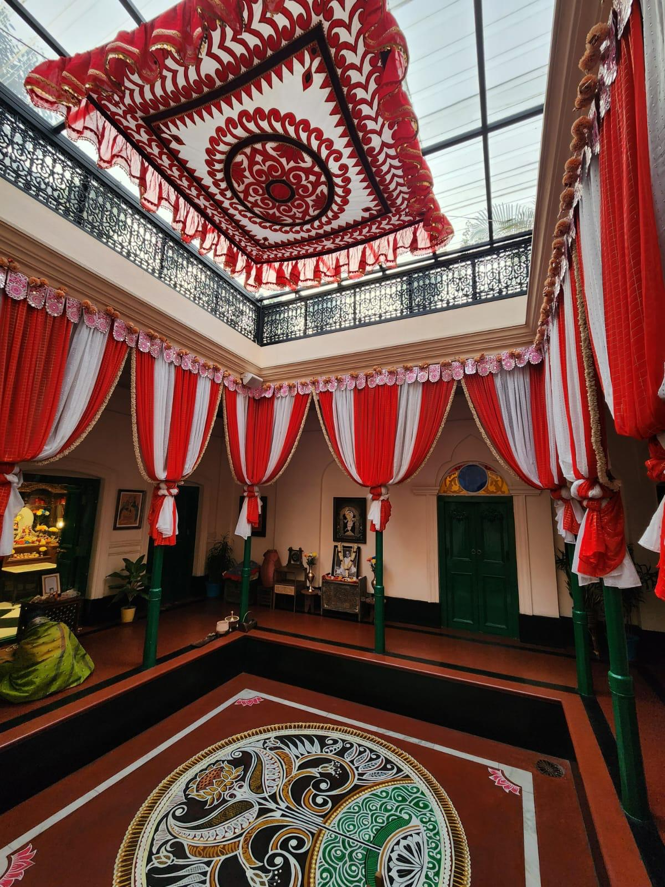
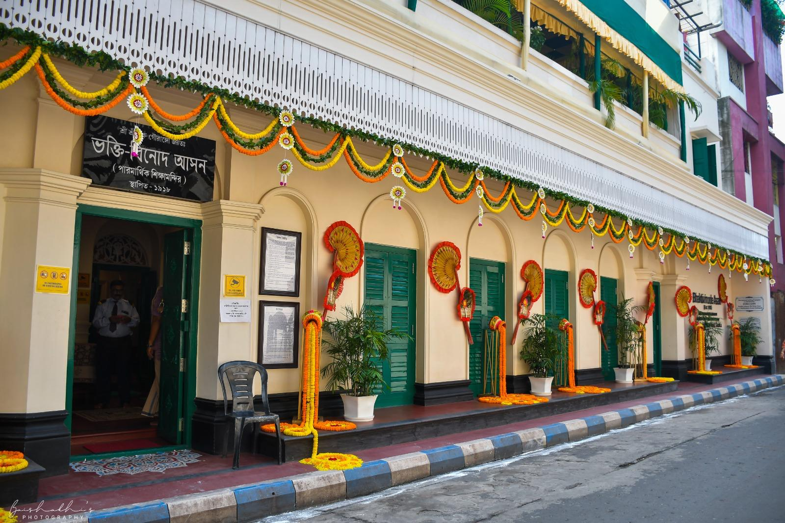
Left: Interior restoration · Right: The historic building at Ultadanga
Over the twelve years Srila Bhaktisiddhanta Saraswati Thakur resided and preached from Bhaktivinode Asan, the address became a magnet for the finest minds and most eminent personages of the era. Among the distinguished visitors:
King of Kasimbazar, Murshidabad — visited in September 1920
Visited alongside many erudite zamindars and scholars
Former Vice-Chancellor, Calcutta University — a regular visitor for Hari Katha
Son of Nepal's Prime Minister — heard a 2-hour lecture on the Bhagavad Gita
National leader and educationist — visited in April 1925
Mayor of Calcutta — attended the inauguration of Baghbazar Gaudiya Math in 1930 alongside Srila Saraswati Thakur
After years of meticulous restoration, Bhaktivinode Asan has been brought back to exactly as it was a century ago. Every detail has been lovingly preserved — from the colour of the wooden doors and the design of the arched windows, from the kadi-barga roof to the red flooring of the corridors, from the original staircase to the design of the sunshades. One devotee described the experience with perfect precision: "It is a transcendental time machine."
The building presently houses: a deity room with Sri Sri Gandharvika Giridhari, a deity dress room, a kitchen, a Dol Mandap, a Tulsi Mandir, a grand museum, an office, sevak rooms, a meeting room, and the central Thakur Dalan on the ground floor. On the first floor sits the very terrace where Srila Bhaktisiddhanta Saraswati Thakur used to deliver classes — his personal room, kitchen and washroom carefully preserved. The exact spot of the historic meeting between Srila Saraswati Thakur and the young Abhay Charan De has been specially beautified with a shade.
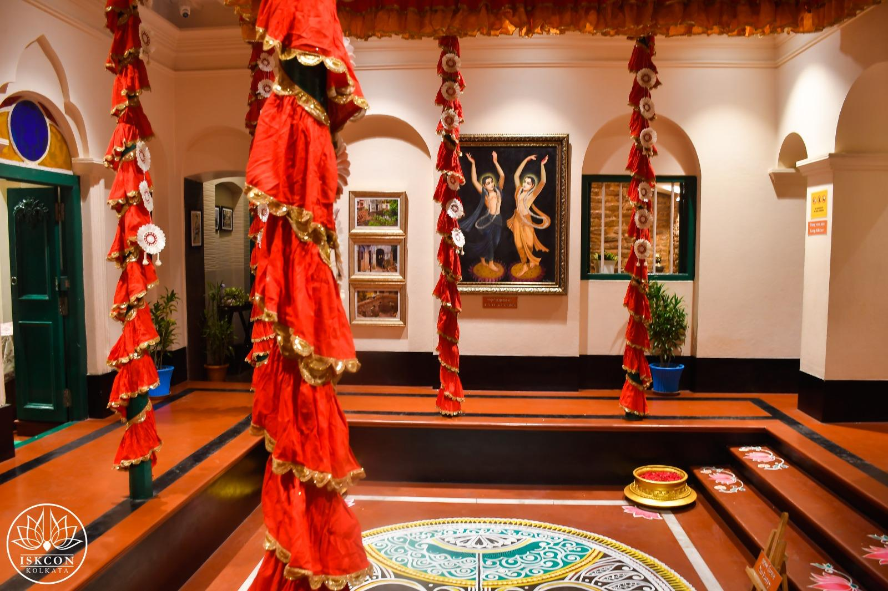
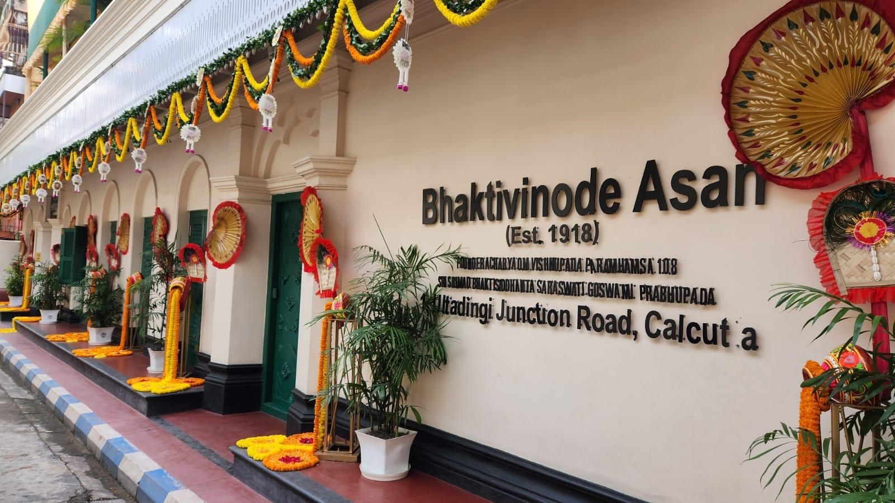
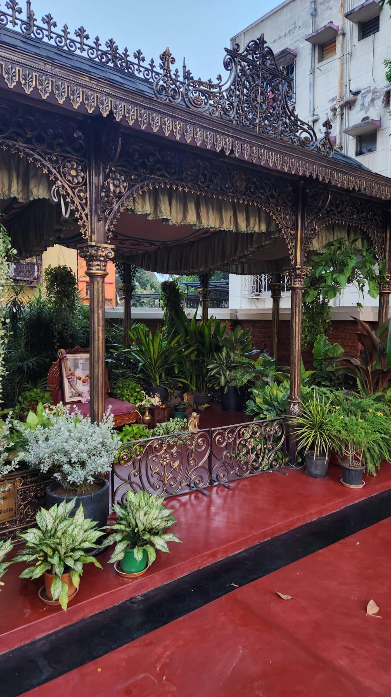
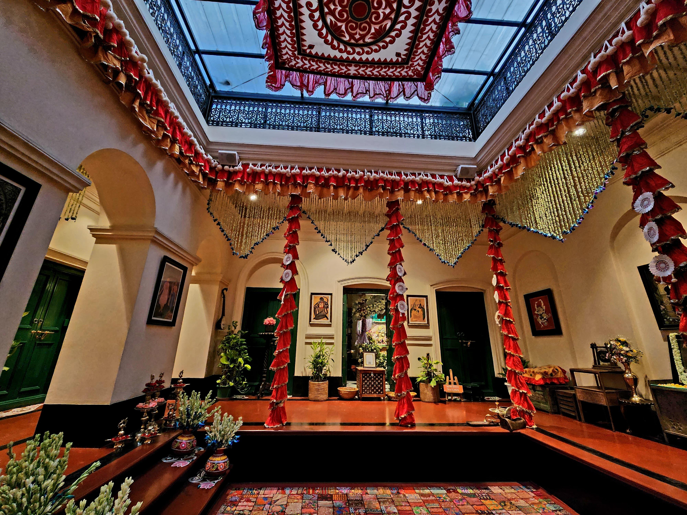
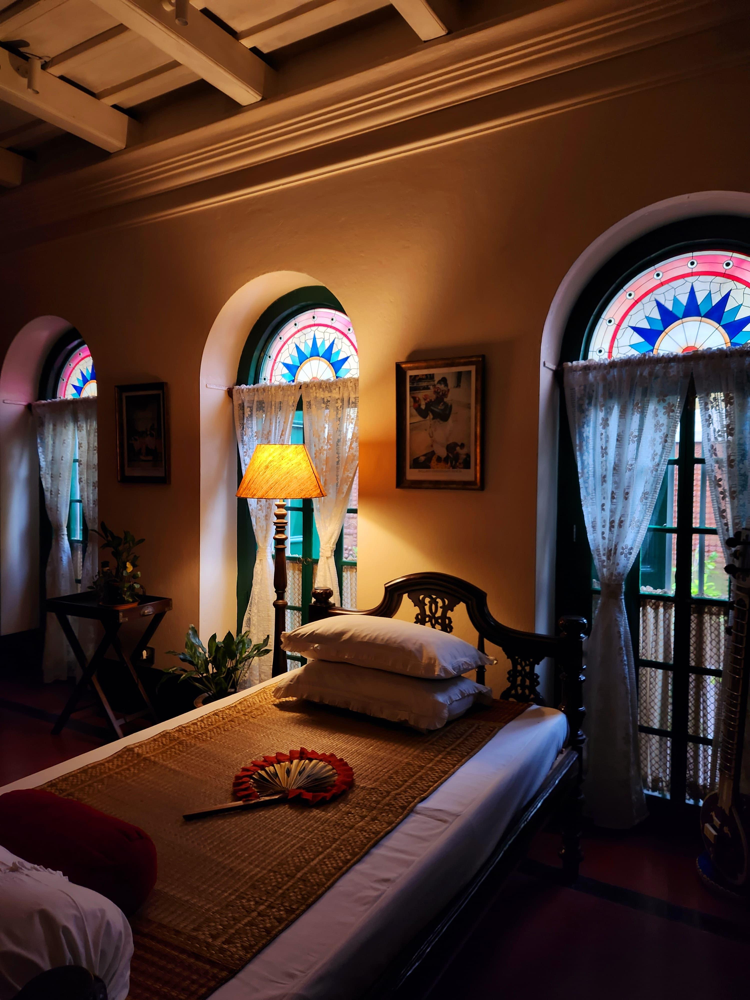
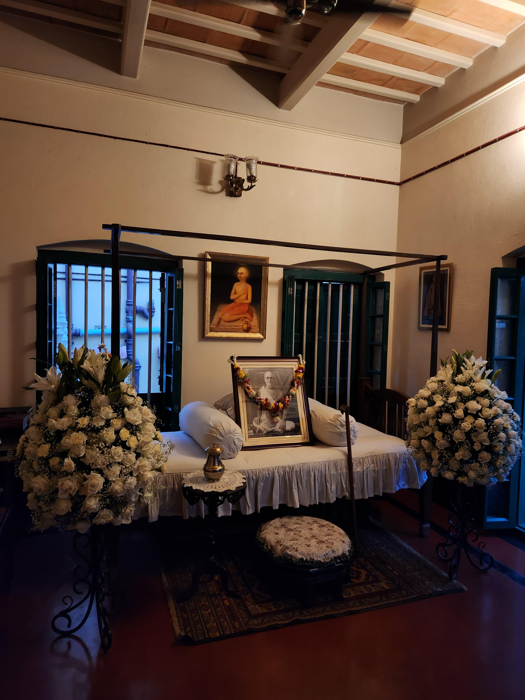
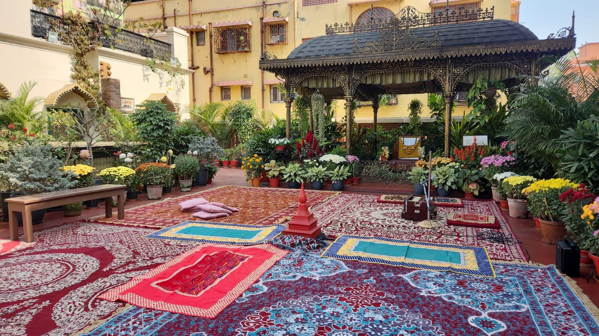
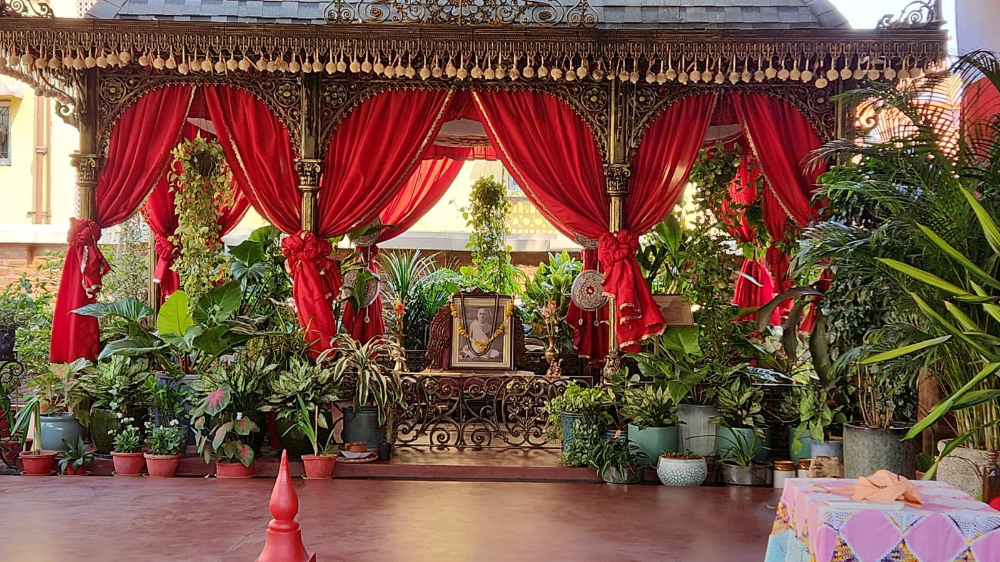
Scenes from the meticulously restored Bhaktivinode Asan
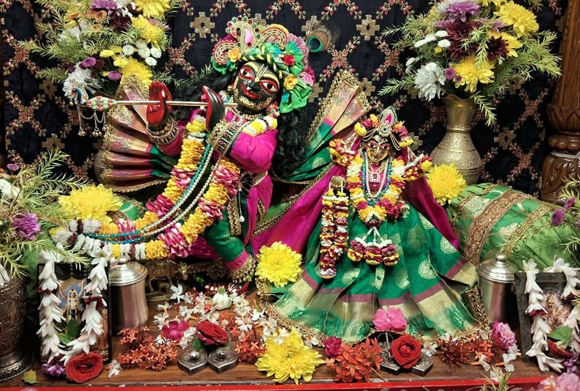
Installed on the auspicious occasion of Krishna Janmashtami, 6th September 1920, by Srila Bhaktisiddhanta Saraswati Thakur himself — Śrī Śrī Gandharva-Giridhārī are the eternal presiding deities of this sacred abode.
Daily worship, arati, and the chanting of the Holy Name fill this space with transcendental sound and divine presence. Staying as a guest here is not merely lodging — it is the privilege of living in the direct association of the Lord and His devotees in a place steeped in more than a century of pure devotion.
As a guest at Bhaktivinode Asan, each day unfolds to the rhythm of the eternal: from the pre-dawn Mangal Arati to the peaceful Shayana Dhoop in the evening. A spiritual itinerary unlike any hotel in the world.
A single, one-time donation that earns you a permanent relationship with this most sacred abode for fifteen full years.
Fifteen complimentary nights of stay per year — entirely free of charge — at the Guest House of Bhaktivinode Asan.
Your stays continue for fifteen consecutive years, allowing you and your family to return season after season to this holy address.
Over fifteen years, a donor under this scheme will have stayed 225 nights at the very building where ISKCON was born — sleeping, praying, and waking in a space that breathes 107 years of devotional history. This is not a transaction. It is the beginning of a sacred bond.
✦ Maintenance and upkeep of a national heritage building
✦ Daily Deity worship of Sri Sri Gandharvika Giridhari
✦ Ongoing renovation and infrastructure of the Guest House
✦ Museum curation preserving Gaudiya Vaishnava heritage
✦ Prasadam and programmes for visiting pilgrims
✦ Living in the footsteps of Srila Prabhupada & Srila Saraswati Thakur
✦ Association with the Holy Name and daily Aratis
✦ Access to the museum, the terrace & Srila Saraswati Thakur's personal rooms
✦ Your name recorded as a Patron Donor in ISKCON Kolkata's records
✦ Blessings of the Vaishnavas for your family's spiritual well-being
Complimentary accommodation at the Guest House of Bhaktivinode Asan for 15 nights annually — for 15 consecutive years. Book at your convenience.
As a resident guest, you will have full access to all daily arati programmes, deity darshan, Tulasi worship and Japa sessions throughout your stay.
Private, leisurely access to the grand museum housing artefacts, photographs, and original items from the era of Srila Bhaktisiddhanta Saraswati Thakur.
Participate in weekly Bhagavatam classes and spiritual discourses — deepening your practice in the most historically potent spiritual setting in Kolkata.
Walk the very terrace where Srila Prabhupada received his life-changing instruction in 1922 — the same words that gave birth to the worldwide Hare Krishna movement.
Your name will be honoured in ISKCON Kolkata's donor records. Your seva will be remembered by the Vaishnava community and blessed by senior Acharyas.
Meals of sanctified prasadam, a strict sattvic environment, and the company of sincere devotees — a retreat for the soul unlike any other in the city.
Donations to ISKCON are eligible for tax exemption under the Income Tax Act. A formal receipt will be provided to all patron donors.
Bhaktivinode Asan carries the blessings of some of the most senior Vaishnava Acharyas and GBC members of ISKCON, who have endorsed and celebrated its restoration and mission:
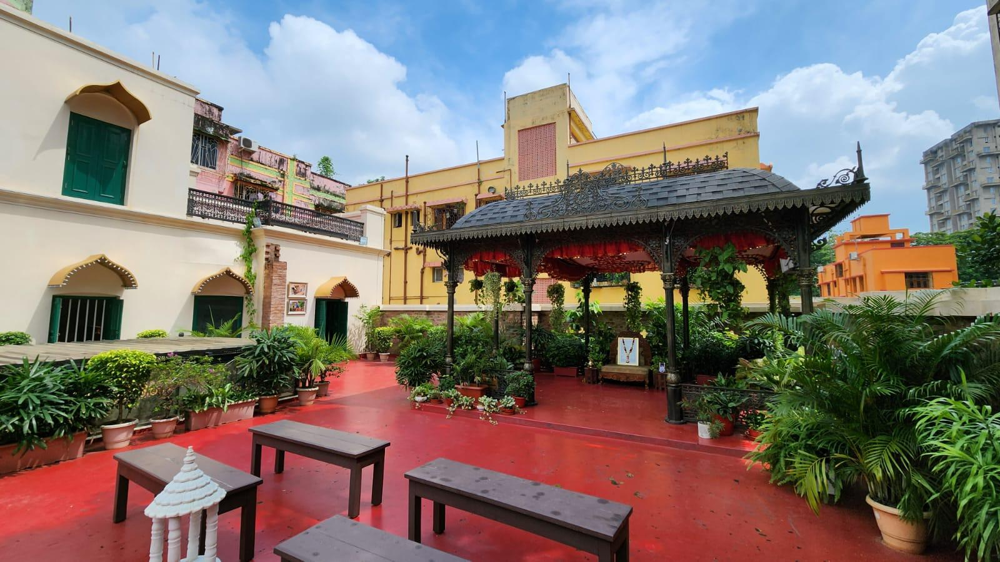
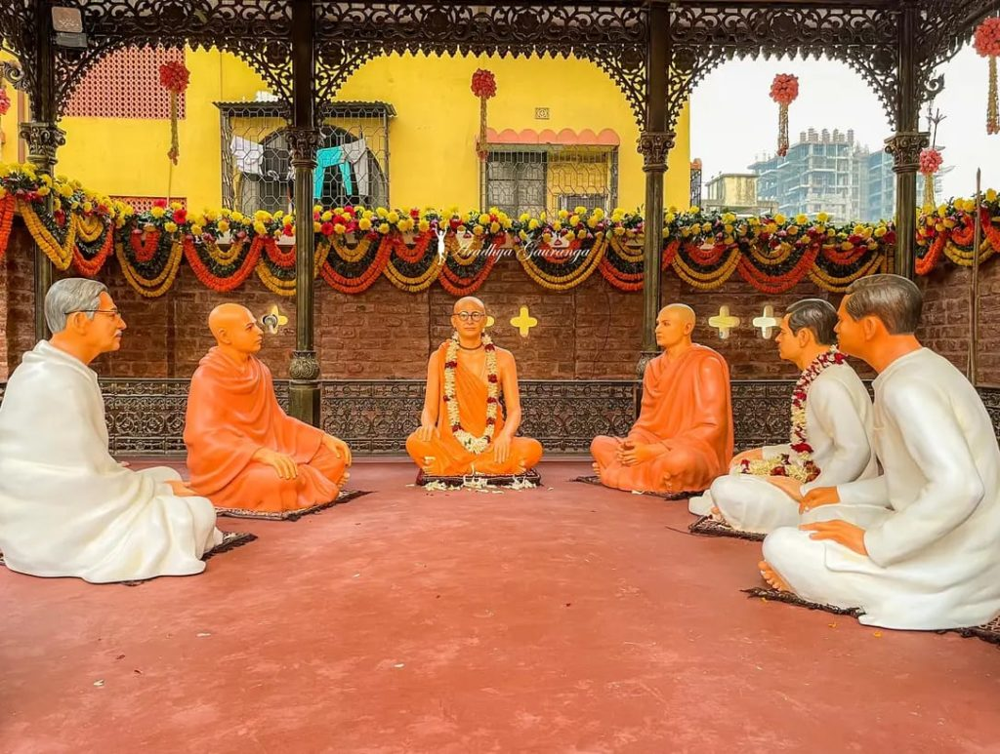
The restored Bhaktivinode Asan — a sanctuary of transcendental history
Born in 1838 in Birnagar, West Bengal as Kedarnatha Datta, Srila Bhaktivinoda Thakur rose to become a District Magistrate and High Court judge — and simultaneously, one of the most prolific and transformative spiritual figures in Gaudiya Vaishnava history. He authored over 100 books and songs, established hundreds of Nama-hatta centres, and re-discovered the birthplace of Sri Caitanya Mahaprabhu in Mayapur.
It was Bhaktivinoda Thakur who declared, decades before the fact: "Oh, for that day when the fortunate English, French, Russian, German and American people will take up banners, mrdangas and karatalas and raise kirtana through their streets." His prediction came true — through the very lineage that blossomed at this Asan.
The Asan is named in his eternal honour. His spirit pervades every stone of this building.
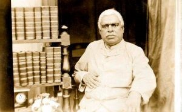
"This place is like the root of organised propagation of Krishna consciousness in modern history. Practically, this building is the spiritual birthplace of ISKCON."
1, Ultadanga Junction Road
Kolkata, West Bengal
India
Rādhīkā Līlā DD
📞 +91 98202 97300
✉ harneeth@ecovillage.org.in
Sri Sri Radha Govinda Mandir
www.iskconkolkata.com
For Donations Contact Rādhīkā Līlā DD